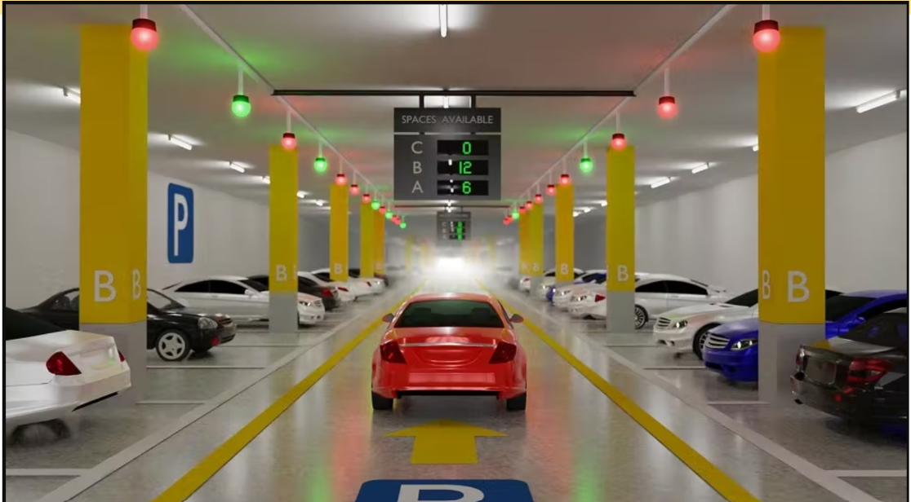
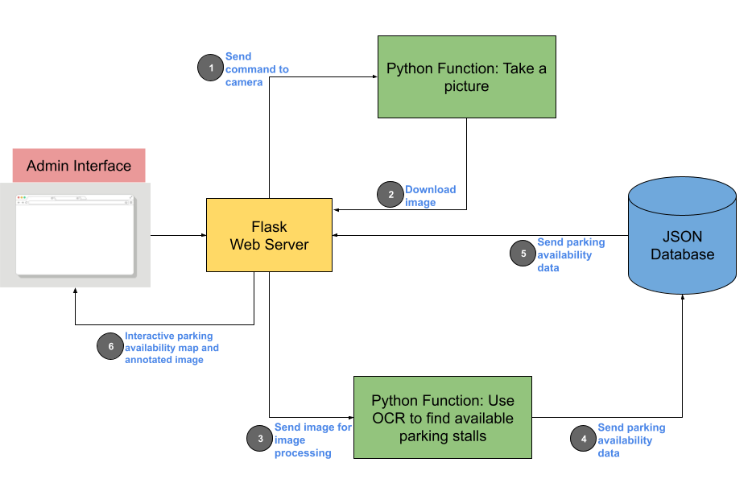
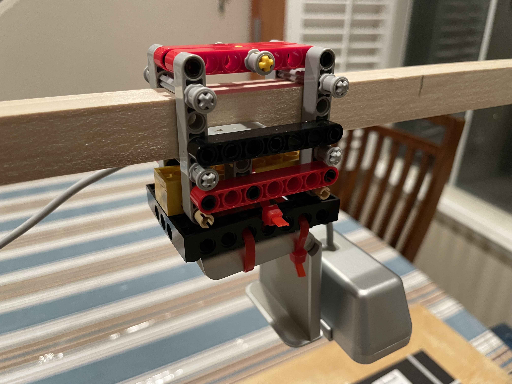
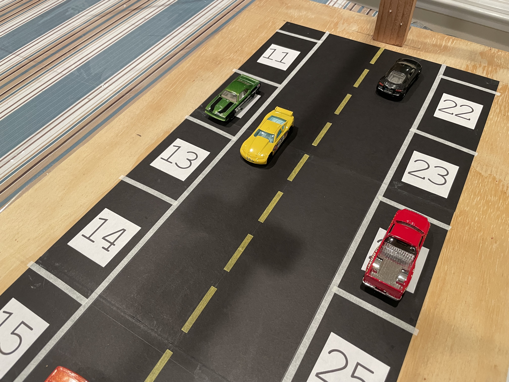
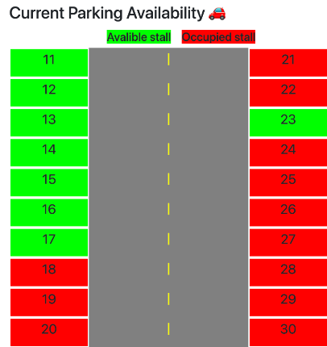
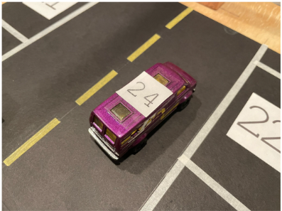
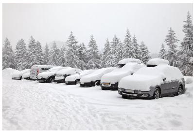

Smart Parking 🚗
Problem
- A study from INRIX collected data from 6,000 drivers from the 10 largest cities in the US.
- The study found that drivers spend on average 17 hours a year looking for parking and up to 107 hours in the largest cities. Drivers spend about a $1000 a year to look for parking and up to $2000 a year in the largest cities in fuel costs.
-
Parking can also have an impact on business.
- 63% of drivers avoided driving to a destination due to the challenge of parking.
- Americans are skipping out on recreation and medical appointments due to parking.
-
Also parking can cause stress
-
61% of drivers felt stressed to find a parking spot.
-
49% of the drivers missed an appointment due to parking.
-
Looking for parking also causes pollution.
-
Generate approximately 730 million vehicle miles traveled (VMT)
-
Creates 47,000 tons of carbon dioxide emissions annually.
-
On average parking contributes to 30% of the traffic in the cities.
-
Parking can also increase commuting times by 20-50%.
Current Solutions
Some parking garages have sensors over each parking stall to detect the availability, however this approach has a high installation cost and maintenance cost and is not practical and cost effective for street parking.

Solution
The solution is a system where a drone takes ariel pictures of a city block. These pictures are going to be processed to find available parking stalls. The user will then be able to use an app to find parking near their desired location or reserve parking ahead of time.
-
Each parking stall assigned a unique identifier (UID).
-
This identifier can be a unique numeric code
-
QR code, barcode etc.
-
Drone takes an aerial image
-
If the unique identifier (UID) is visible => stall is available
-
If the unique identifier (UID) is not visible => the stall is not available.
-
An appropriate image processing or pattern recognition algorithm can be used to identity the UID to determine the parking availability.
-
Drivers can use an app to find available parking in proximity to desired location. The app can also be used to reserve parking.
Implementation
-
Created a prototype of a city block with 20 parking stalls.
-
Each parking stall has a unique numeric identifier.
-
The model has a webcam above acting as a drone.
-
To recognize the unique identifiers from an image, I used Optical Character Recognition (OCR).
-
Identify available/occupied parking stall
-
Use Optical Character Recognition (OCR) to identify numeric unique id
-
OCR is a machine learning algorithm that uses pattern matching algorithms to extract text from an image.
-
Created an admin interface using Flask.
-
Users can a take a picture of the parking stalls through the website.
-
They will then be shown a dashboard showing the parking availability.




Limitations
-
Cars with numbers on the roof can deceive the system into thinking that number is a open parking stall.
-
People can take other's reserved parking
-
If a drone is flying on a pre-programmed route then it can take some time for the drone return to a specific part of the road, therefore this may increase the time it takes for the availability data to be updated.
-
The identifiers can be can be covered by snow or can be damaged.


Science Fair Participation
Partcipated in the Alameda County Science and Engineering Fair (ACSEF) with this project.